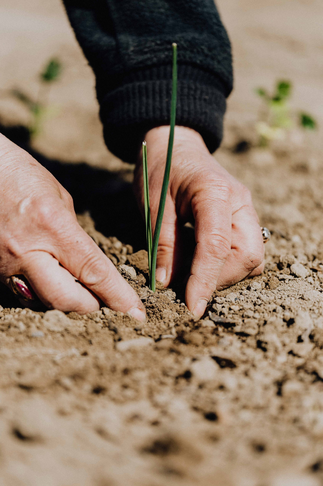

Organic Future
Somos a Organic Future, uma empresa que trabalha para divulgar os conceitos e as práticas orgânicas, pois achamos que o futuro é orgânico.
Trabalhamos em diferentes frentes, incentivando produtores e consumidores de produtos orgânicos.
Acreditamos que se cada um fizer sua parte pensando na coletividade estaremos interferindo de uma forma positiva no nosso planeta. Até uma pequena horta, seja em vaso, floreira ou em um jardim que não está sendo usado, vai ajudar na qualidade do alimento que todos nós consumimos, além de cuidar do mundo para você e as próximas gerações.
Quem produz, comercializa e consome produtos orgânicos e sustentáveis, acredita nas boas práticas, que ajudam a construir um mundo cada vez melhor. Valoriza a saúde, o meio ambiente e a responsabilidade social.

História
Nascemos com um projeto de interação de um curso de programação, onde todos os integrantes queriam fazer a diferença no meio ambiente e nas gerações futuras. O nome Organic Future, veio da ideia que os produtos orgânicos estarão no nossso futuro, pois fazem a diferença e cada vez mais estarão em nosso cotidiano.
Queremos impactar pessoas, e mostrar que a agricultura orgânica não é cara nem impossível.
Missão
A Organic Future atua no Brasil desde junho de 2022, concientizando sobre os danos à saúde e ao meio ambiente que os agrotóxicos causam.
Valores
Nossa empresa vem se dedicando a produzir sem agredir o meio ambiente, cuidando de nossos clientes de acordo com cada necessidade, seja um pequeno agricultor precisando de adubos ou uma pessoa comum que quer fazer a diferença.
Visão
Nosso propósito é proteger a fauna, a flora e as águas do Brasil. Nossa empresa almeja um mundo mais sustentável e familiar, partindo do nosso Brasil.